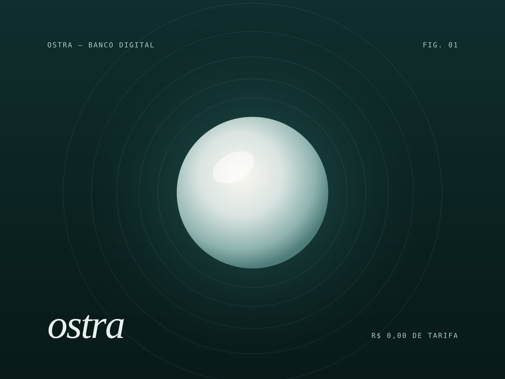
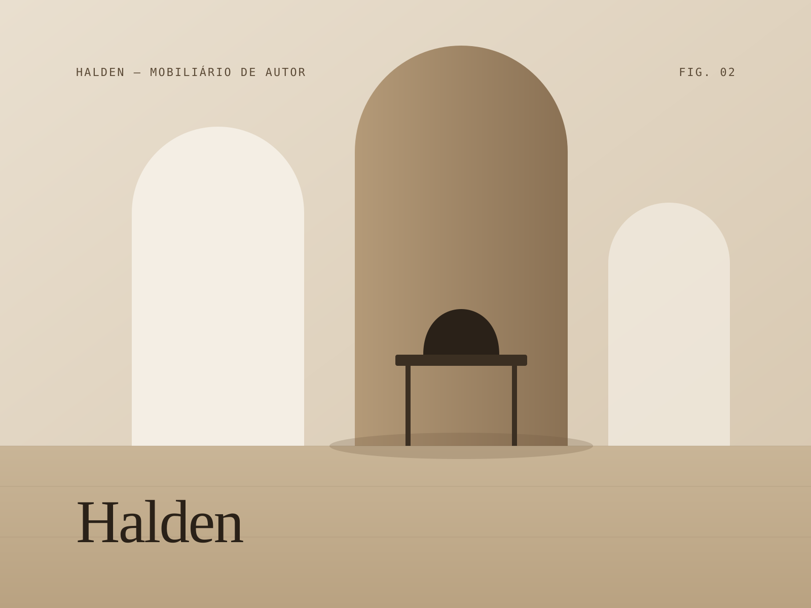
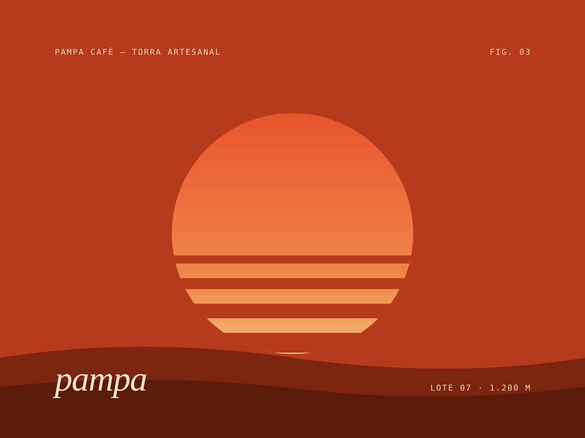
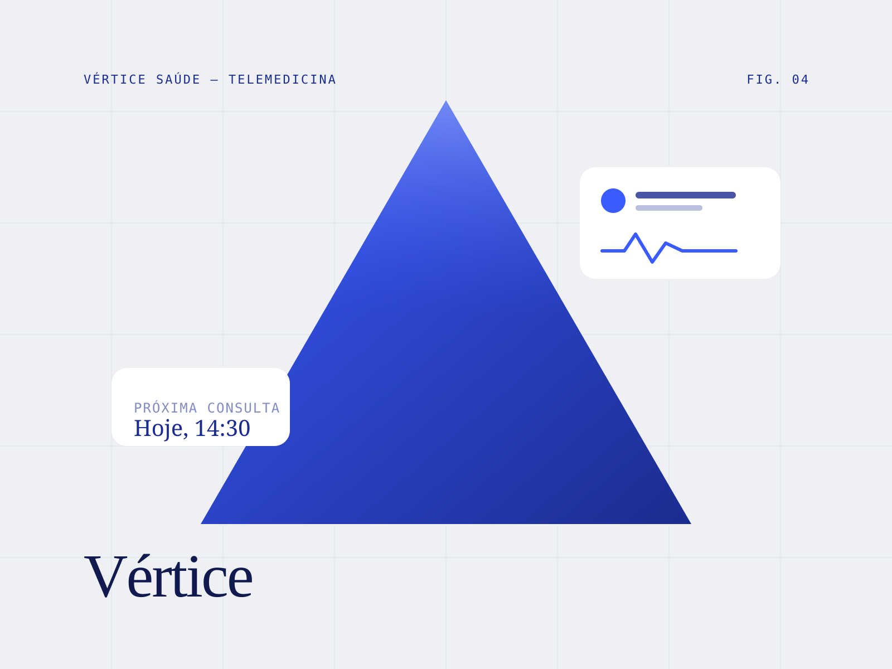

Estúdio independente de marca & produto digital
Marcas que pairam acima do ruído.
Somos a Nimbo — um time pequeno de propósito que une estratégia, design e tecnologia para construir marcas raras e produtos que performam.
Confiada por equipes que constroem o novo
- Ostra
- HALDEN
- pampa café
- vértice/saúde
- Lumen Labs
- Mareh
- KORA_
- Aurora
(01) Manifesto
Marcas fortes não gritam. Elas têm clareza, ritmo e uma razão para existir. Unimos estratégia, design e tecnologia em um só time — pequeno de propósito, obsessivo por detalhe e medido pelo que muda no seu negócio.
— Nimbo, desde 2017
(02) Capacidades
Do primeiro insight ao último pixel, um mesmo time conduz a marca inteira — sem repasses, sem ruído.
-
01
Estratégia de marca
Posicionamento, naming, arquitetura e narrativa — a base que dá direção a cada decisão.
-
02
Identidade visual
Sistemas visuais, tipografia, motion e guias vivos que escalam sem perder a alma.
-
03
Produto & Web
Sites, plataformas e design systems rápidos, acessíveis e pensados para converter.
-
04
Crescimento
Mídia, SEO e CRO orientados a dados, com experimentação contínua e metas claras.
(03) Trabalho selecionado
Projetos onde forma e número andam juntos.



Seu projeto pode ser o próximo.
Vamos conversar(04) Estúdio
Pequenos o bastante para cuidar de cada detalhe. Experientes o bastante para mover o ponteiro.
A Nimbo nasceu em 2017 com uma tese simples: o melhor trabalho acontece quando quem pensa a estratégia também desenha, escreve e coloca no ar. Somos 14 pessoas — estrategistas, designers, redatores e engenheiros — trabalhando lado a lado com poucos clientes por vez.
Sem camadas de atendimento, sem apresentações infladas. Ciclos curtos, decisões claras e uma obsessão saudável por resultado.
- Anos de estúdio
- 9
- Projetos entregues
- 140+
- Clientes que voltam
- 96%
- Prêmios de design
- 12
(05) Processo
Ciclos curtos.
Decisões claras.
-
Semanas 1–2
Imersão
Entrevistas, dados e auditoria de marca. Saímos com um diagnóstico honesto e uma pergunta certa para responder.
-
Semanas 3–4
Direção
Território estratégico e rotas criativas testadas cedo — com você na sala, não numa apresentação final.
-
Semanas 5–10
Construção
Sistema visual, produto e conteúdo nascem juntos e são entregues em incrementos que você já pode usar.
-
Contínuo
Evolução
Medimos, aprendemos e ajustamos. A marca é um organismo vivo — e seguimos ao seu lado.